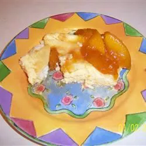

HOME
Cheese Crepe Souffle

Ingredients :
- 12 eggs
- 4 tablespoons butter
- 1 onion, diced
- 1 cup uncooked long-grain white rice
- 2 cups chicken broth
- 2 tablespoons butter
- 2 tablespoons all-purpose flour
- 1 cup half-and-half cream
- salt and pepper to taste
- 1 (4 ounce) can diced green chilies, drained
- 1 cup diced sharp Cheddar cheese
- ½ cup diced Monterey Jack cheese
- 1 pinch paprika, for garnish
Steps :
- Place eggs in a large saucepan and cover with cold water. Bring water to a boil; cover, remove from heat,
and let eggs stand in hot water for 10 to 12 minutes. Remove from hot water, cool, peel and slice.
- In large saucepan, melt butter over medium heat. Stir in onions and rice; cook, stirring occasionally, until
onions are limp. Pour in 2 cups chicken broth, cover and cook until rice is done, about 20 minutes.
- Preheat oven to 350 degrees F (175 degrees C). Lightly grease a 9x13 inch casserole dish.
- In another saucepan, melt remaining 2 tablespoons butter. Whisk in flour. Slowly stir in cream and remaining
2 tablespoons chicken broth; stir constantly until thickened. Remove from heat and season with salt and
pepper to taste.
- Spread half of the cooked rice in bottom of the prepared pan. Top with half of the egg slices, half of the
diced green chilies and half of each of the cheeses. Spoon half of the chicken gravy the eggs. Repeat with
remaining ingredients.
- Bake uncovered in preheated oven until bubbly and golden. Sprinkle with paprika if desired.